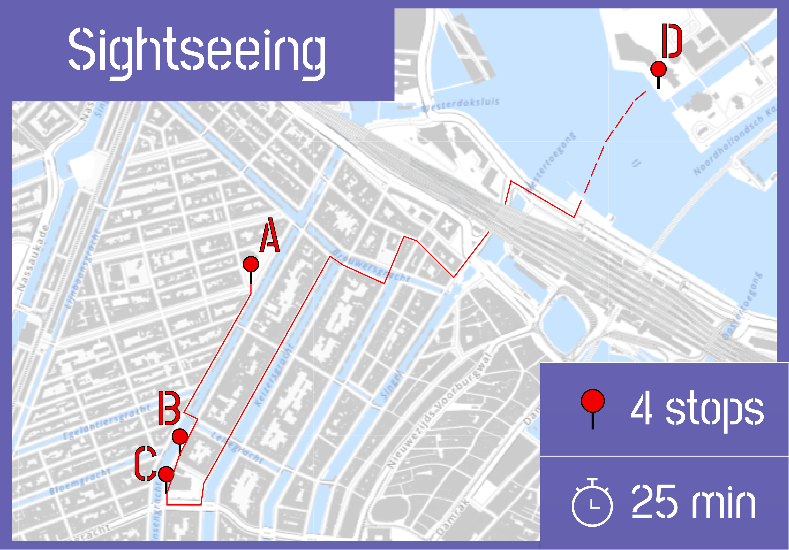
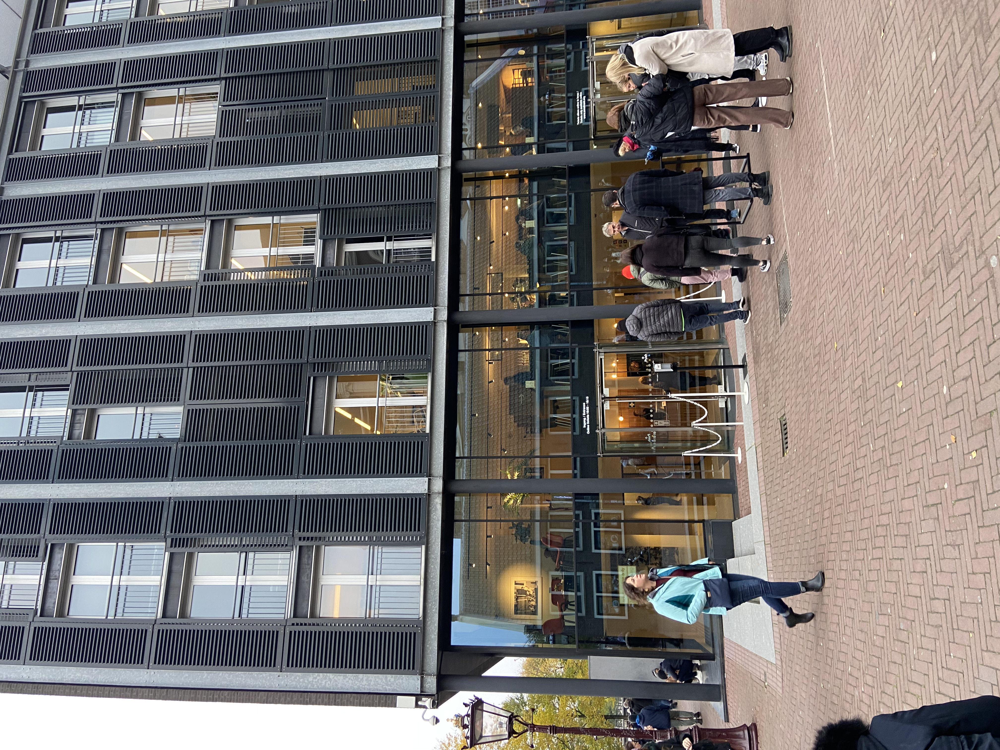
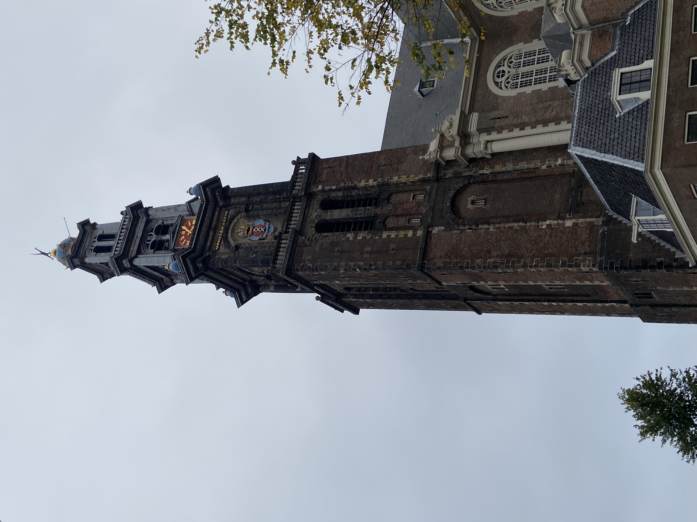
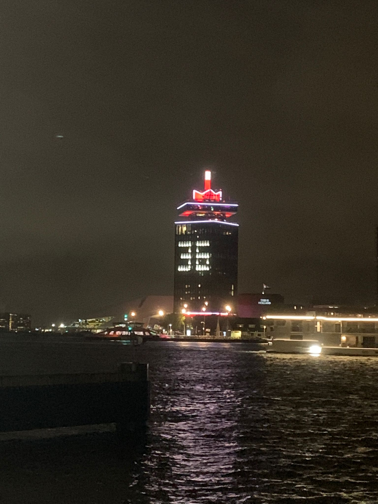

Your personal route!
-
A
Startpunt: Noorderkerk.
Noordermarkt 44, 1015 NA Amsterdam.

-
B
Westertoren.
Prinsengracht 279a, 1016 GW Amsterdam.
 -
C
Anne Frank Huis.
Westermarkt 20, 1016 GV Amsterdam.
 -
D
ADAM Toren.
Overhoeksplein 1, 1031 KS Amsterdam
